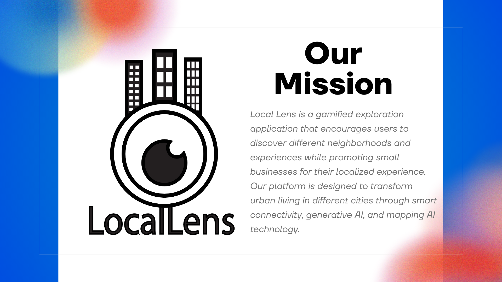

Local Lens — Gamified Local Exploration App
A gamified travel app that connects travelers with locals to deliver real-time safety insights, cultural etiquette tips, and community-driven recommendations. Inspired by the interactive style of Pokémon Go, the app offers a fun and engaging way to explore your surroundings while supporting local businesses, promoting green travel options, and uncovering hidden gems.
Overview
Timeline: 3 Days
Role: UX Research, Wireframing, UI Design, Prototyping
Problem
Travelers struggle to find reliable, localized safety information and authentic cultural insights when visiting new areas. Existing apps focus heavily on tourist attractions and overlook the nuanced knowledge that locals possess. As a result, visitors often miss out on hidden gems, cultural customs, and safety considerations that could enhance their experience. Additionally, there’s limited integration with local businesses or initiatives that promote sustainability. There’s a clear need for a platform that connects travelers with the local community, providing actionable insights, supporting small businesses, and encouraging eco-friendly practices while fostering meaningful engagement.
Research
I conducted user interviews and competitor analyses (Google Maps, Yelp, Airbnb, and Hopper). Key insights included:
- Users want safety info that feels trustworthy and simple.
- Travelers want real etiquette and cultural guidance, but not overwhelming amounts.
- Global tourism is a growing market, expected to grow by 6.67 billion by 2028.
- Pokémon Go remains popular, with tens of millions of active players and substantial revenue, though its user numbers are lower than its 2016 peak. It is still one of the leading mobile games globally.
User Flows
To accommodate both users, we designed two flows:
- Traveler Mode: Choose preferences → View safety map → Explore local businesses.
- Local Mode: Submit recommendations → Validate community feedback → Earn rewards.

Wireframes
Early sketches focused on reducing cognitive load by simplifying navigation into three main tabs.
Final UI
Reflection
This project taught me how to design for two distinct user groups, travelers and locals, while keeping the interface clean and intuitive. I learned how to integrate safety-focused features in a way that feels approachable and reassuring rather than intimidating. Working in an interdisciplinary team, I gained experience creating an app that encourages exploration, supports local businesses, and promotes eco-friendly practices, all while delivering a seamless and engaging user experience.